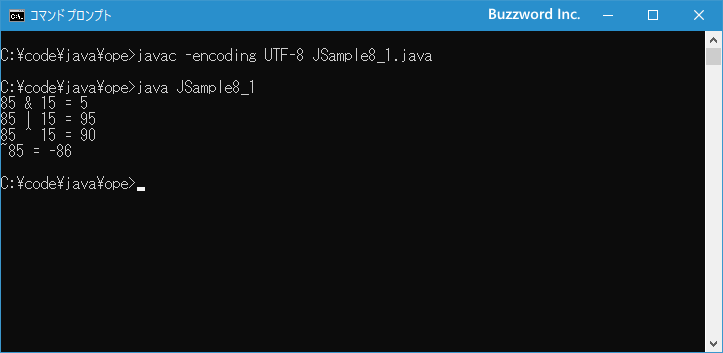

ビット演算子とシフト演算子
整数型の値に論理演算を行うための演算子がビット演算子です。整数と整数に対して論理積を取ったり、右または左へ指定したビット数だけシフトさせた値を取得することができます。ここではビット演算子とシフト演算子の使い方について解説します。
ビット演算子の使い方
整数の値に対してビット単位で処理を行うために用意されているのがビット演算子です。次の演算子が用意されています。
| 演算子 | 使用例 | 意味 |
|---|---|---|
| & | a & b | a と b の論理積(ビットAND) |
| | | a | b | a と b の論理和(ビットOR) |
| ^ | a ^ b | a と b の排他的論理和(ビットXOR) |
| ~ | ~a | a のビット反転(ビットNOT) |
| << | a << n | a を 左へ n ビットシフト |
| >> | a >> n | a を 右へ n ビットシフト(符号有り) |
| >>> | a >>> n | a を 右へ n ビットシフト(符号無し) |
整数を 2 進数の形式で表示し、各ビットに対して演算を行います。 int 型の値は 32 ビットで表すことができ、例えば 1060152741 (16進数だと 0x3F30A5A5) を 2 進数で表すと次のようになります。
1060152741 (0x3F30A5A5) 0011 1111 0011 0000 1010 0101 1010 0101 ---- ---- ---- ---- ---- ---- ---- ---- 3 F 3 0 A 5 A 5
それでは各演算子について順に確認していきます。なお << 、 >> 、 >>> の 3 つの演算子についてはこのあとのシフト演算子のところで解説します。
論理積(ビットAND)
ビット AND は演算子の左辺と右辺の同じ位置にあるビットを比較して、両方のビットが共に 1 の場合だけ 1 にします。次の例を見てください。
int i; i = 85 & 15;
85(0x55) と 15(0x0F)のビット AND は次のように演算が行われます。(括弧の中は 16 進数で表した値です)。
0000 0000 0000 0000 0000 0000 0101 0101 = 85(0x55) 0000 0000 0000 0000 0000 0000 0000 1111 = 15(0x0F) --------------------------------------- 0000 0000 0000 0000 0000 0000 0000 0101 = 5(0x05)
演算子の左辺と右辺の値をビット単位で比較し、どちらも 1 だった場合だけ 1 とし、それ以外は 0 とします。演算の結果である 5 が変数 b に代入されます。
論理和(ビットOR)
ビット OR は演算子の左辺と右辺の同じ位置にあるビットを比較して、少なくもどちらか一つのビットが 1 の場合は 1 にします。次の例を見てください。
int i; i = 85 | 15;
85(0x55) と 15(0x0F)のビット OR は次のように演算が行われます。
0000 0000 0000 0000 0000 0000 0101 0101 = 85(0x55) 0000 0000 0000 0000 0000 0000 0000 1111 = 15(0x0F) --------------------------------------- 0000 0000 0000 0000 0000 0000 0101 1111 = 95(0x5F)
演算子の左辺と右辺の値をビット単位で比較し、少なくともどちらか一つが 1 の場合は 1 とし、それ以外は 0 とします。演算の結果である 95 が変数 b に代入されます。
排他的論理和(ビットXOR)
ビット XOR は演算子の左辺と右辺の同じ位置にあるビットを比較して、どちらかのビット一つだけ 1 の場合に 1 にし、両方が 1 の場合や両方が 0 の場合は 0 にします。次の例を見てください。
int i; i = 85 ^ 15;
85(0x55) と 15(0x0F)のビット XOR は次のように演算が行われます。
0000 0000 0000 0000 0000 0000 0101 0101 = 85(0x55) 0000 0000 0000 0000 0000 0000 0000 1111 = 15(0x0F) --------------------------------------- 0000 0000 0000 0000 0000 0000 0101 1010 = 90(0x5A)
演算子の左辺と右辺の値をビット単位で比較し、どちらかのビットが一つだけ 1 の場合に 1 とし、それ以外は 0 とします。演算の結果である 90 が変数 b に代入されます。
反転(ビットNOT)
ビット NOT は演算子の右辺の値の各ビットを反転させます。 1 の場合は 0 に、 0 の場合は 1 にします。次の例を見てください。
int i; i = ~15;
85(0x55) のビット NOT は次のように演算が行われます。
0000 0000 0000 0000 0000 0000 0101 0101 = 85(0x55) --------------------------------------- 1111 1111 1111 1111 1111 1111 1010 1010 = -86(0xFFFFFFAA)
演算子の右辺の値をビットを反転します。演算の結果である -86 が変数 i に代入されます。(最上位ビットが 1 の場合には負の数を表します)。
それでは簡単なサンプルプログラムを作って試してみます。テキストエディタで次のように記述したあと、 JSample8-1.java という名前で保存します。
class JSample8_1{
public static void main(String[] args){
int i1 = 85 & 15;
int i2 = 85 | 15;
int i3 = 85 ^ 15;
int i4 = ~85;
System.out.println("85 & 15 = " + i1);
System.out.println("85 | 15 = " + i2);
System.out.println("85 ^ 15 = " + i3);
System.out.println("~85 = " + i4);
}
}
コンパイルを行います。
javac -encoding UTF-8 JSample8_1.java
その後で、次のように実行してください。
java JSample8_1

ビット AND 、ビット OR 、ビット XOR 、 ビット NOT の各演算を行った結果を画面に表示しました。
シフト演算子の使い方
ビット演算子の中でも次の 3 つはシフト演算子と呼ばれることもあります。
| 演算子 | 使用例 | 意味 |
|---|---|---|
| << | a << n | a を 左へ n ビットシフト |
| >> | a >> n | a を 右へ n ビットシフト(符号有り) |
| >>> | a >>> n | a を 右へ n ビットシフト(符号無し) |
シフト演算子は対象の値の各ビットを右または左へ指定した数だけビット単位でシフトします。
例えば 10 進数で数値を左へシフトするということは 10 倍することを意味します。例えば 240 を左へ 1 つシフトすると 2400 となり 10 倍の値になります。また右へシフトするということは 1/10 にすることを意味します。例えば 240 を右へ 1 つシフトすると 24 となり 1/10 の値になります。
シフト演算子は 2 進数に変換した値をビット単位でシフトを行いますので、左へシフトすると 2 倍となり、右へシフトすると 1/2 となります。
それでは各演算子について順に確認していきます。
左シフト
左シフト(<<)は対象の値を指定した数だけ左へシフトします。このとき左端からはみ出した部分は捨てられ、空いた右側の部分には 0 で埋められます。次の例を見てください。
int i; i = 21 << 2;
21(0x15) の左シフトは次のように演算が行われます。(括弧の中は 16 進数で表した値です)。
0000 0000 0000 0000 0000 0000 0001 0101 = 21(0x15) --------------------------------------- 0000 0000 0000 0000 0000 0000 0010 1010 = 42(0x2A) 左へ 0000 0000 0000 0000 0000 0000 0101 0100 = 84(0x54) 左へ
指定した数だけ左へビット単位でシフトが行われ、演算の結果である 84 が変数 i に代入されます。
右シフト
右シフト(>>)は対象の値を指定した数だけ右へシフトします。このとき右端からはみ出した部分は捨てられますが、空いた左側の部分にはもともと最上位ビットが 1 だった場合は 1 で埋められ、最上位ビットが 0 だった場合は 0 で埋められます。このように最上位のビットは常に変わらないので、数値の符号は変化がありません。次の例を見てください。
int i; i = 21 >> 2;
21(0x15) の右シフトは次のように演算が行われます。
0000 0000 0000 0000 0000 0000 0001 0101 = 21(0x15) --------------------------------------- 0000 0000 0000 0000 0000 0000 0000 1010 = 10(0x0A) 右へ 0000 0000 0000 0000 0000 0000 0000 0101 = 5(0x05) 右へ
指定した数だけ右へビット単位でシフトが行われ、演算の結果である 5 が変数 i に代入されます。
今度は最上位ビットが 1 だった場合です。次のサンプルを見てください。
int i; i = -92 >> 2;
-92(0xFFFFFFA4) の右シフトは次のように演算が行われます。
1111 1111 1111 1111 1111 1111 1010 0100 = -92(0xFFFFFFA4) --------------------------------------- 1111 1111 1111 1111 1111 1111 1101 0010 = -46(0xFFFFFFD2) 右へ 1111 1111 1111 1111 1111 1111 1110 1001 = -23(0xFFFFFFE9) 右へ
指定した数だけ右へビット単位でシフトが行われ、演算の結果である -23 が変数 i に代入されます。今回の場合は最上位ビットが 1 だったので、右へシフトしたときに最上位ビットは 1 で埋められています。
右シフト(符号なし)
右シフト(符号なし >>>)は対象の値を指定した数だけ右へシフトします。このとき右端からはみ出した部分は捨てられますが、空いた左側の部分のもともとの最上位ビットの値に関わらず 0 で埋められます。符号ありの右シフトが算術シフトと呼ばれるのに対して、符号なしの右シフトは論理シフトと呼ばれることもあります。
次の例を見てください。
int i; i = 21 >>> 2;
21(0x15) の右シフト(符号なし)は次のように演算が行われます。
0000 0000 0000 0000 0000 0000 0001 0101 = 21(0x15) --------------------------------------- 0000 0000 0000 0000 0000 0000 0000 1010 = 10(0x0A) 右へ 0000 0000 0000 0000 0000 0000 0000 0101 = 5(0x05) 右へ
指定した数だけ右へビット単位でシフトが行われ、演算の結果である 5 が変数 i に代入されます。値のもともとの最上位ビットが 1 でなかった場合は符号ありの右シフトと同じです。
今度は最上位ビットが 1 だった場合です。次のサンプルを見てください。
byte b; b = -92 >>> 2;
-92(0xFFFFFFA4) の右シフト(符号なし)は次のように演算が行われます。
1111 1111 1111 1111 1111 1111 1010 0100 = -92(0xFFFFFFA4) --------------------------------------- 0111 1111 1111 1111 1111 1111 1101 0010 = 2147483602(0x7FFFFFD2) 右へ 0011 1111 1111 1111 1111 1111 1110 1001 = 1073741801(0x3FFFFFE9) 右へ
指定した数だけ右へビット単位でシフトが行われ、演算の結果である 1073741801 が変数 i に代入されます。今回の場合は最上位ビットが 1 でしたが、符号なし右シフトの場合は最上位ビットは 0 で埋められます。
それでは簡単なサンプルプログラムを作って試してみます。テキストエディタで次のように記述したあと、 JSample8-2.java という名前で保存します。
class JSample8_2{
public static void main(String[] args){
int i1 = 21 << 2;
int i2 = 21 >> 2;
int i3 = 21 >>> 2;
System.out.println("21 << 2 = " + i1);
System.out.println("21 >> 2 = " + i2);
System.out.println("21 >>> 2 = " + i3);
int i4 = -92 >> 2;
int i5 = -92 >>> 2;
System.out.println("-92 >> 2 = " + i4);
System.out.println("-92 >>> 2 = " + i5);
}
}
コンパイルを行います。
javac -encoding UTF-8 JSample8_2.java
その後で、次のように実行してください。
java JSample8_2

左シフト、右シフト、右シフト(符号なし)の各演算を行った結果を画面に表示しました。
-- --
ビット演算子とシフト演算子の使い方について解説しました。
( Written by Tatsuo Ikura )

著者 / TATSUO IKURA
初心者～中級者の方を対象としたプログラミング方法や開発環境の構築の解説を行うサイトの運営を行っています。